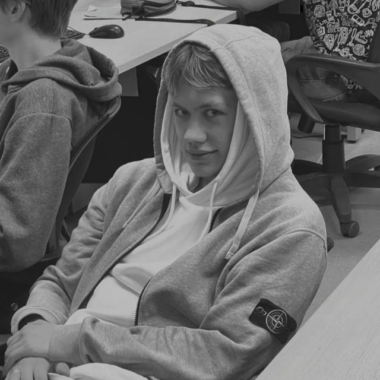

О себе

Привет, я Иван, житель Москвы и любитель исследовать свой город. Я обожаю находить скрытые уголки столицы, от исторических памятников до современных парков. Мой блог — это дневник моих прогулок, где я делюсь впечатлениями и фотографиями. Интересный факт: я прошёл пешком более 500 км по Москве за год!